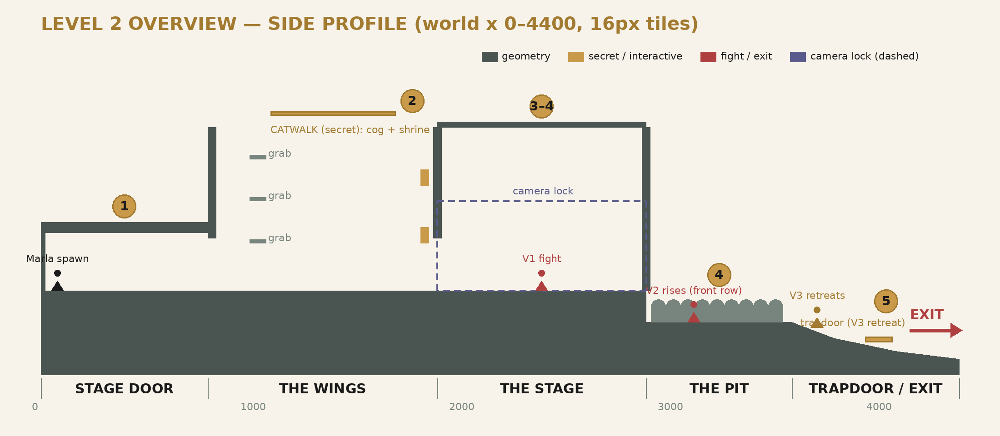

ClockWork — Level 2: The Captain's Stage
Non-goals: no magic (still sealed), no true_death ending in normal play (the level ends before recasts run out — true_death is reserved for a later level), no meta-progression UI beyond the two new bars.
Marla leaves the Undercroft through the eastern exit and enters the backstage of the theater proper. The play never stops here: The Captain is a role, not a person — bodies are conscripted into it and the Audience insists the show continues. Marla interrupts a performance. The role binds to a vessel, she cuts it down, and the house does not let the curtain fall: the role limps into the next understudy in front of her. The level ends with the scarred Captain retreating deeper into the theater — favor bleeding, poise cracked — setting up the true confrontation later.
camera_limit_zone). Captain.bind_role(&"the_captain", [vessel_1, vessel_2, vessel_3]) fires; Vessel 1 (thread_puppet) walks on. Favor + Poise bars fade in (new UI). Fight to Form 0 → form collapse on stage: vessel drops, Audience noise swells, scar applies (poise −15, integrity −10, volatility +20), and the role recasts into Vessel 2 which stands up from the front row of the Pit. Monologue #2: Marla realizes killing the body did nothing. Checkpoint 3 (mid-fight checkpoint restores at stage edge, Captain metrics persist — the Audience remembers).Captain.damage_back_attacking_vessel() — the crowd gasps. Fight ends at Form 0 → second scar → recast begins…recast_count = 2, volatility 40, scarred poise/integrity carried forward by the Audience's memory design.
Total footprint ≈ x 0–4400, ground y = 0 baseline, 16px tiles. Same node pattern as intro: Mockups/ StaticBody2D + Polygon2D blockout, labels in half-transparent 16pt.
| Zone | X range | Y notes | Contents |
|---|---|---|---|
| STAGE DOOR | 0–800 | flat, ceiling −220 | spawn x 80, poster prop, checkpoint_1 @ 420, monologue #1 trigger @ 200 |
| THE WINGS | 800–1900 | vertical shaft up to −620 | 3 grab edges (+130px spacing), curtain-gap view windows @ y −180/−400, checkpoint_2 @ 1780 |
| CATWALK (secret) | 1100–1700 @ y −680 | above Wings | cog + shrine nook, secret_foliage overlay, drop-down return |
| THE STAGE (arena) | 1900–2900 | flat, proscenium walls | camera limit region 1900–2900 / −340–40; camera focus marker center-stage; both boss fights here |
| THE PIT | 2900–3600 | floor +120 (below stage lip) | audience silhouette props (Polygon2D rows), Vessel 2 spawn point front row, kill-nothing (safe zone) |
| TRAPDOOR / EXIT | 3600–4400 | descending | Vessel 3 retreat path, exit door (locked until Beat 5), checkpoint_4 |
These are the code tasks this level forces. Items marked GAP are confirmed against current source.
| # | Task | Where | Status |
|---|---|---|---|
| 1 | GAP: Audience pressure tick is commented out (_process in Audience.gd:36-40). Re-enable it (or drive from a level-scoped timer so the intro level stays Audience-free). | Scripts/Globals/Audience.gd | required |
| 2 | GAP: _apply_captain_behaviour() runs once in _ready only (enemy.gd:30). Connect it to Captain.recast_applied + Captain.metrics_changed so scars/pressure change behavior live (G2/G3 depend on this). | Enemy/Scripts/enemy.gd | required |
| 3 | GAP: nothing calls Captain.bind_role() yet. Level script binds the role on stage entry with the 3-vessel list. | new Scripts/captains_stage.gd | required |
| 4 | GAP: Captain.attaking_vessel is never assigned. Enemy sets it on entering its attack state; parry riposte (damage_back_attacking_vessel) is dead code until then. | enemy.gd attack state | required |
| 5 | Favor + Poise player-facing bars (replace debug label). Reuse UI juice pattern from Player/Scripts/UI/; listen to Captain.metrics_changed. | new UI scene | required |
| 6 | Recast presentation: on recast_applied, current vessel plays collapse anim, next vessel spawns at Pit marker, camera focus_on() the handoff (~1.5s), input locked via tree pause + balloon-style ALWAYS node. | level script + enemy scene | required |
| 7 | Vessel 3 scripted retreat (Beat 5): on second recast_applied, dispatch a retreat state instead of combat; unlock exit. | enemy state machine | required |
| 8 | Hitbox behavior recording already works (combo suffix fix, repetition once per chain). Verify thread_puppet is NOT in TrainingDummy group so recording is active here. | Player/Scripts/hitbox.gd | verify |
| 9 | Prompter heckle lines: Dialogue Manager triggered from favor thresholds (75 / 50 / 25). Uses portrait balloon; Prompter portrait TBD. | Dialogue/captains_stage.dialogue | required |
| 10 | MAX_RECASTS is 5 but this level's vessel list has 3; invalidation would fire at recast 3 (no_viable_vessels). Beat 5 retreat happens at recast 2, so no conflict — but assert it in the level script. | Captain.gd / level script | guard |
| Value | Source | Level 2 target | Why |
|---|---|---|---|
| Vessel Form | Captain.form = 100 | keep 100 | ≈ 3 full light chains (33) or mix with heavies (32) — 25–35s per vessel at tutorial skill |
| Scar per collapse | poise −15 / integrity −10 / volatility +20 | keep | two scars → volatility 40 → +20% speed, −12% cooldown, jitter 0.28, heavy 56% (per _apply_captain_behaviour formulas) |
| Pressure interval | PRESSURE_INTERVAL 1.0s | keep | with rates 0.02–0.05 the drift is slow; visible over a 2-min fight without dominating |
| Repetition → favor | −0.05 × repetition /s | keep, verify feel | spamming one verb should cost ~10–15 favor over Beat 4 — noticeable on the new bar |
| Enemy damage | light 12 / heavy 28 | light 10 / heavy 22 | first real enemy; player HP economy still tutorial-adjacent |
| Recast handoff | — | 1.5s camera focus, 0.5s vulnerability window on new vessel | reward aggression on the handoff without free damage |
| ID | Trigger | Speaker | Placeholder line |
|---|---|---|---|
| M1 | Beat 1 entry | Marla | "Applause. Through three feet of stone. Who claps in a prison?" |
| P1 | Beat 2 curtain gap | Prompter (offstage) | "Line! …He never needs the line. He never leaves the stage." |
| M2 | first recast | Marla | "I put him down. The role just… picked up someone else." |
| P2 | favor < 50 | Prompter | "They've seen this trick, girl. Show them another." |
| M3 | Beat 5 exit | Marla | "Every seat turned to me. Intermission's over." |